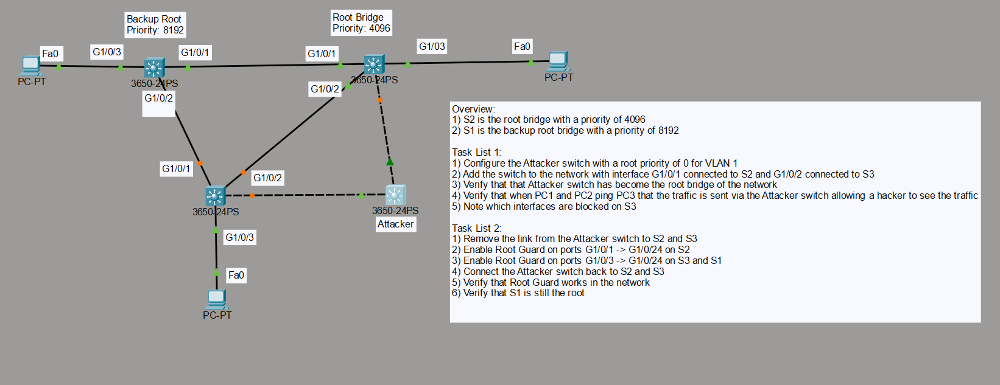
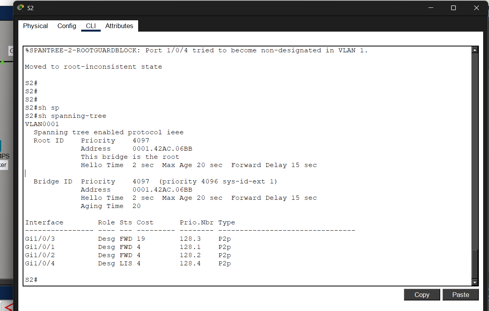
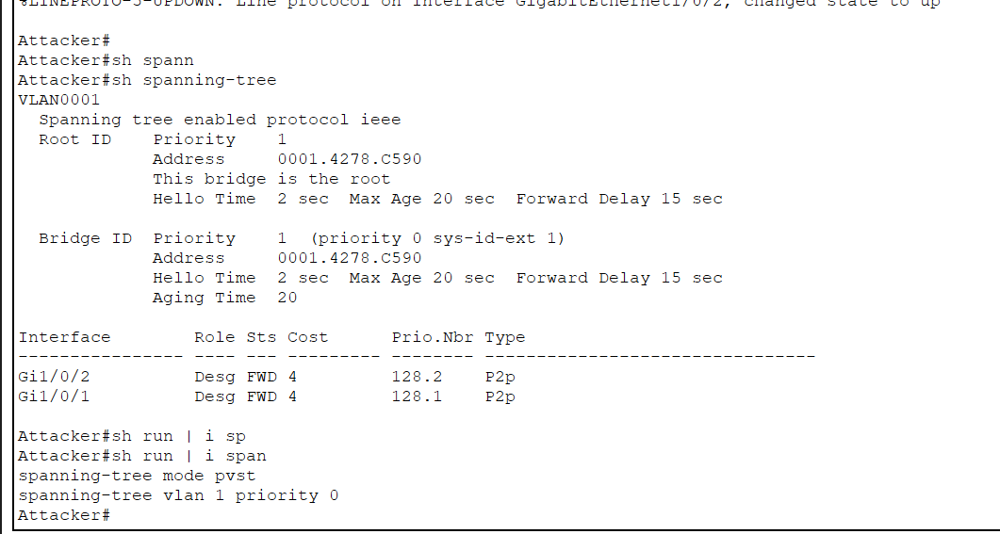
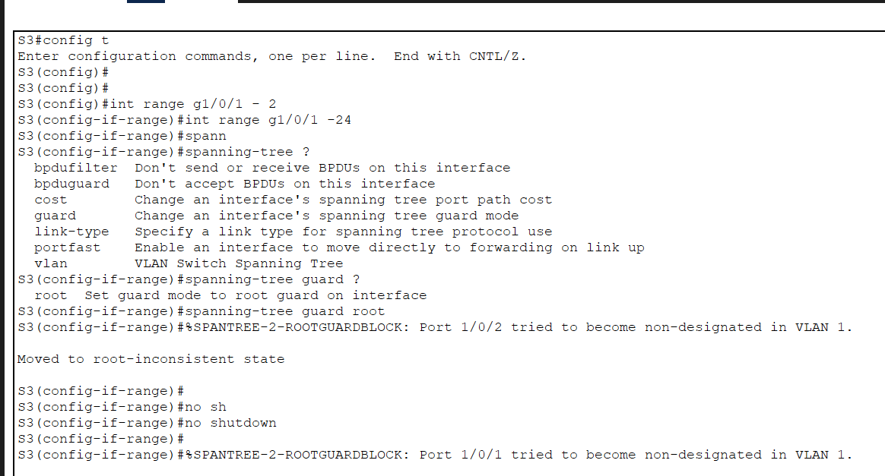

Practical implementation of Spanning Tree Protocol (STP) security using Root Guard to prevent rogue switches from becoming Root Bridge inside an enterprise Layer 2 network.
This lab demonstrates how an attacker switch can manipulate the Spanning Tree Protocol election process by advertising a lower bridge priority and becoming the Root Bridge of the network.
The lab also demonstrates how Root Guard protects the network by preventing unauthorized switches from taking control of the STP topology.
S2 was configured as Root Bridge and S1 as Backup Root.
An attacker switch attempted to become Root Bridge using lower bridge priority.
Root Guard blocked unauthorized STP manipulation and protected network topology.
The attacker switch was configured with the lowest STP bridge priority:
conf t spanning-tree vlan 1 priority 0
As a result, the rogue switch successfully became the new Root Bridge and changed the Layer 2 topology.
Root Guard was configured on trusted switch ports to prevent rogue switches from becoming Root Bridge.
conf t interface range g1/0/1 - 24 spanning-tree guard root
After reconnecting the attacker switch, ports entered:
root-inconsistent state
This successfully blocked unauthorized STP manipulation.
show spanning-tree show running-config | include spanning-tree
Learned how switches elect Root Bridge using Bridge ID and priority.
Understood how rogue switches can manipulate Layer 2 topology.
Configured Root Guard to secure trusted switch ports.
Learned the importance of Layer 2 security inside enterprise networks.

STP Network Topology

Root Bridge Election Verification

Rogue Switch Becoming Root Bridge

Root Guard Blocking Rogue Switch
Successfully demonstrated rogue switch manipulation inside Layer 2 topology.
Prevented unauthorized Root Bridge election using Root Guard.
Improved practical understanding of Layer 2 attack prevention.
Protects enterprise networks from unauthorized topology manipulation.
Prevents traffic instability and malicious STP attacks.
Critical security concept for enterprise switching environments.